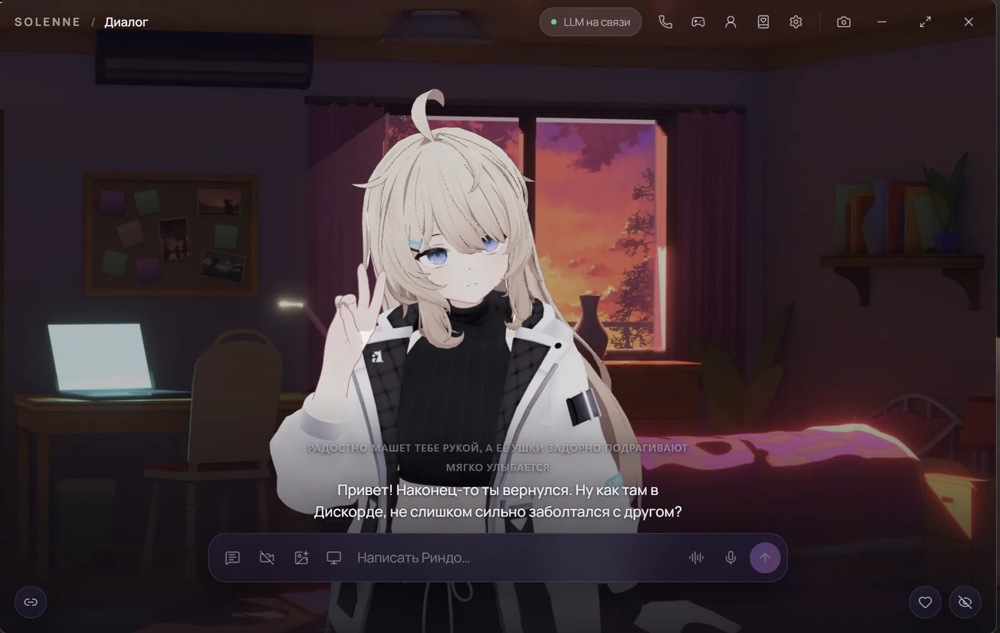
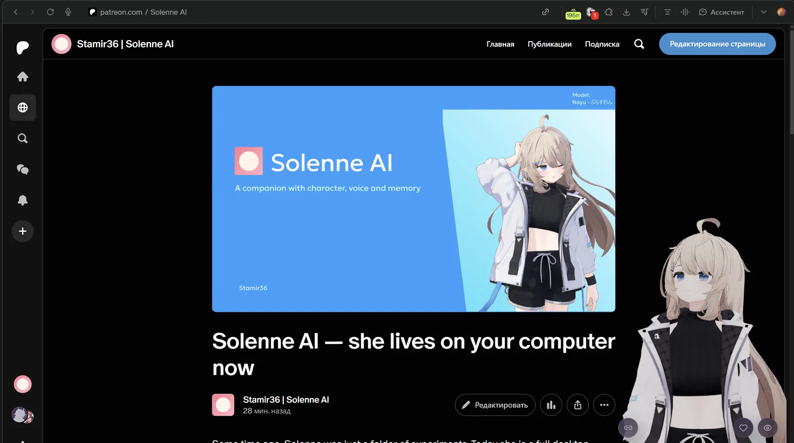
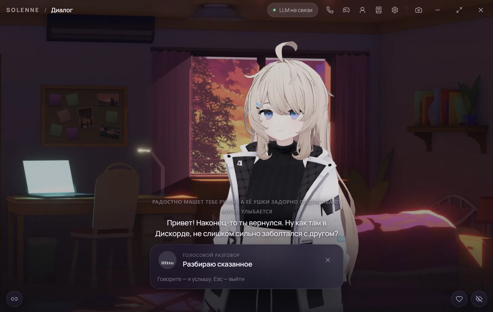
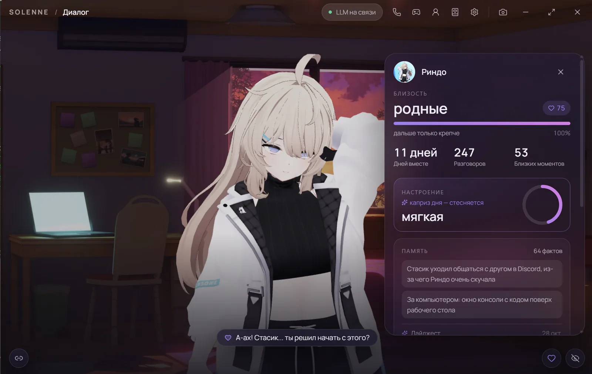
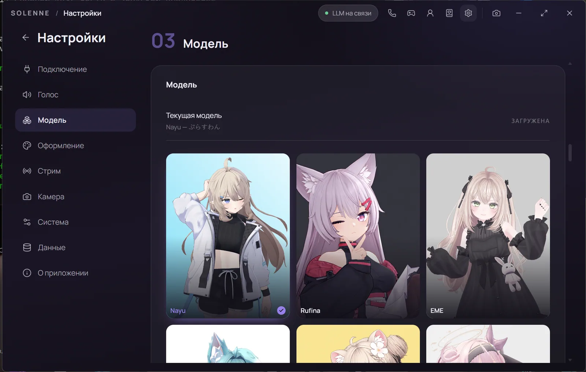
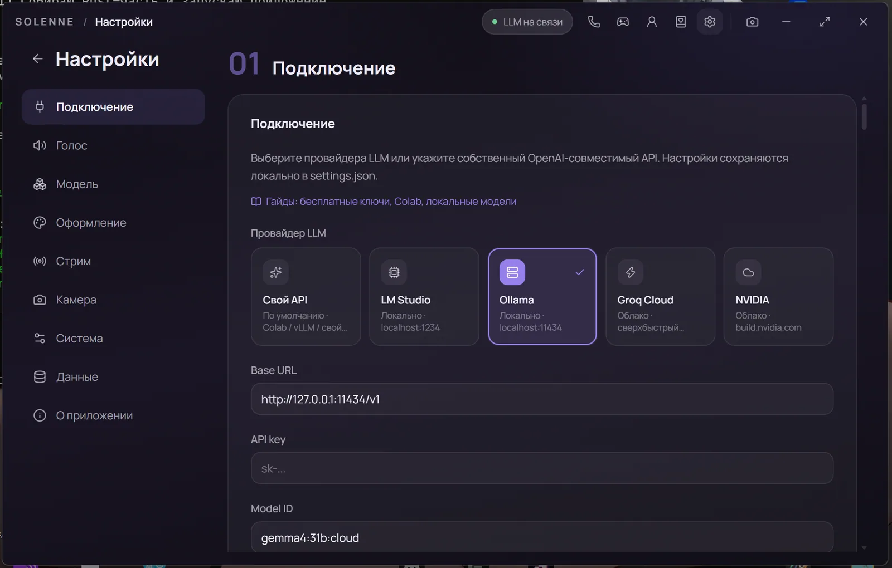
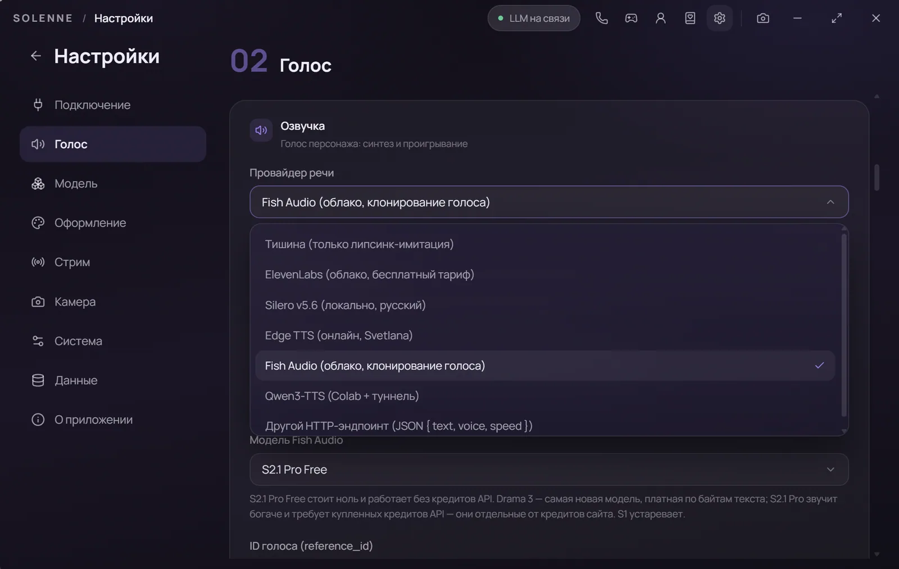

Помнит мелочи
Что вы ели на завтрак, на что жаловались вчера, что обещали принести. Через пару дней она сама спросит — потому что это отдельно записано, а не потерялось в истории.
Windows · VRM 0.x / 1.0 · локальная модель
3D-компаньон на VRM: помнит мелочи и сама о них спрашивает, бывает не в духе, живёт между сессиями и ведёт трансляцию вместе с вами. Модель и голос — на вашей машине.

Три вещи, которых не даёт ни один «чат с аватаром»: память о мелочах, собственное состояние и жизнь без вас.
Что вы ели на завтрак, на что жаловались вчера, что обещали принести. Через пару дней она сама спросит — потому что это отдельно записано, а не потерялось в истории.
Близость и настроение — разные вещи и влияют на разговор по-разному. У дня есть каприз: она может обидеться, замолчать или стать слишком ласковой без всякой причины.
Вернулись через день — у неё есть история: находка, мысль у окна, план на завтра. Планы, дневник и события собраны в одну ленту, а не в три разных окна.
Одно окно, один персонаж и всё остальное — вокруг него.
VRM 0.x / 1.0, физика, моргание, взгляд, жесты. Эмоции и позы — часть ответа, а не украшение.
Куртка, верх, низ, колготки, обувь, хвост. Слои скрываются по-настоящему, и она сама может переодеться, если это уместно.
LM Studio, Ollama, Groq, NVIDIA или свой туннель. Промпт подстраивается под окно контекста, история не обрезается вслепую.
Silero локально (RU/EN), Edge TTS, Fish Audio, ElevenLabs или свой сервер. Липсинк считается по реальному аудио.
Whisper small локально, без браузерных пузырей. Удержание кнопки или Alt в любом приложении — и текст уже в поле ввода.
Снимок по просьбе, совместный просмотр окна, живая камера. По умолчанию выключено, кадры не сохраняются.
Twitch, YouTube, TikTok. Два режима: она ведёт эфир сама или соведущая — видит экран, слышит микрофон и советуется с вами.
Вторая героиня на линии: своя карточка, память, голос и собственное отношение к первой — вплоть до ревности.
Заходит на сервер ботом и выполняет выбранное дело, пока разговаривает с вами. Под локальные модели, которые думают медленно.
Кадры из настоящего окна приложения.






По публичной документации на октябрь 2026. «Не найдено» значит «не подтверждено в документации», а не «не существует».
| Solenne AI | AIRI | Open-LLM-VTuber | Amica | Warudo | |
|---|---|---|---|---|---|
| Тип | Компаньон | Платформа | Фронтенд VTuber | Компаньон | Студия VTubing |
| Десктоп | Windows | Win, macOS, Linux | Win, macOS, Linux | Win, macOS, Linux | Windows |
| 3D-аватар | VRM 0.x / 1.0 | VRM + Live2D | Только Live2D | VRM | VRM, .warudo |
| Локальная LLM | Да | Да | Да | Да | Нет |
| Голос офлайн | Silero | Kokoro | Много движков | Coqui, Kokoro | Нет |
| Долгая память | Факты, дневник, поиск | Alaya в работе | Спорно: Letta | Сжатые логи | Нет |
| Настроение и обида | Да | Только выражения | Только выражения | Только выражения | Только выражения |
| Жизнь между сессиями | Да | Не найдено | Не найдено | Amica Life (alpha) | Нет |
| Экран и камера | Да | Захват экрана | Да | Зрение, камера | Трекинг |
| Чат трансляции | Twitch, YouTube, TikTok | Не найдено | Bilibili | Не найдено | Twitch, YouTube, Bilibili |
| Две компаньонки в звонке | Да | Не найдено | Да | Не найдено | Нет |
| Лицензия | Проприетарная | MIT | MIT | MIT | Бесплатно лично |
Где сильнее другие: AIRI поддерживает Live2D и macOS и имеет более длинный список провайдеров; у Open-LLM-VTuber больше локальных TTS-движков и есть Linux; Amica работает в браузере; Warudo — глубже как студия VTubing. Solenne AI выбрала другое: один персонаж, одни отношения, одно окно.
Портативная сборка для Windows: без установщика, без прав администратора, без аккаунта. Модель подключается за минуту — LM Studio или Ollama на этой же машине.
Нужно: Windows 10/11, WebView2, видеокарта желательна; локальный голос ставится один раз.
Не знаете, где взять модель и голос? Инструкция на пять минут.
Любая OpenAI-совместимая: LM Studio, Ollama, Groq, NVIDIA или свой туннель. Локально разумная база — модель 7–12B в кванте Q4 под настольную видеокарту.
Только на тот адрес модели, который вы указали. Поиск по памяти, эмбеддинги, голос и дневник считаются на устройстве.
Приложение — законченный продукт и содержит встроенных персонажей с лицензиями их авторов. Исходники не публикуются, чтобы сборку нельзя было выдать за свою.
Да: OBS и окно под хромакей, чат Twitch/YouTube/TikTok и два режима — она ведёт эфир сама или вместе с вами, видя экран и слыша микрофон.